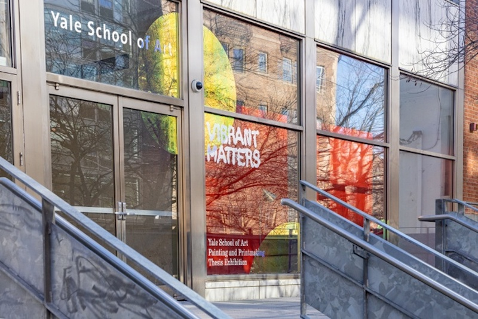
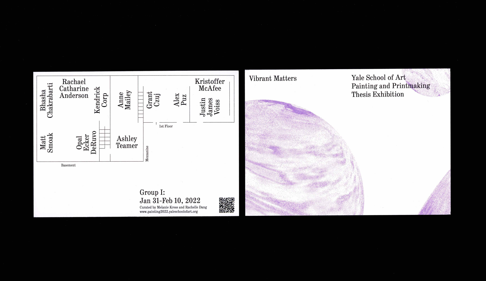

Mengjie
Liu
About
Contact
Vibrant Matters
Next Project
visual identity, website, 2022 (collaboration with Alvin Ashiatey)
visit the website
 
The identity for Vibrant Matters, 2022 Yale School of Art Painting and Print-making Thesis Exhibition, is made out of colorful bubbles: fragile yet energetic, transparent and at the same time iridescent.